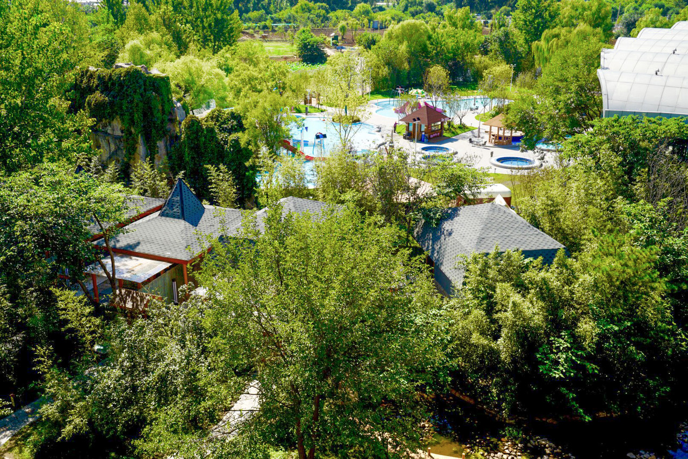
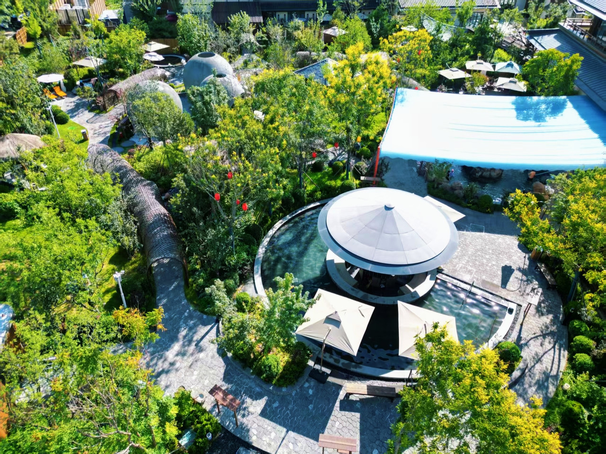
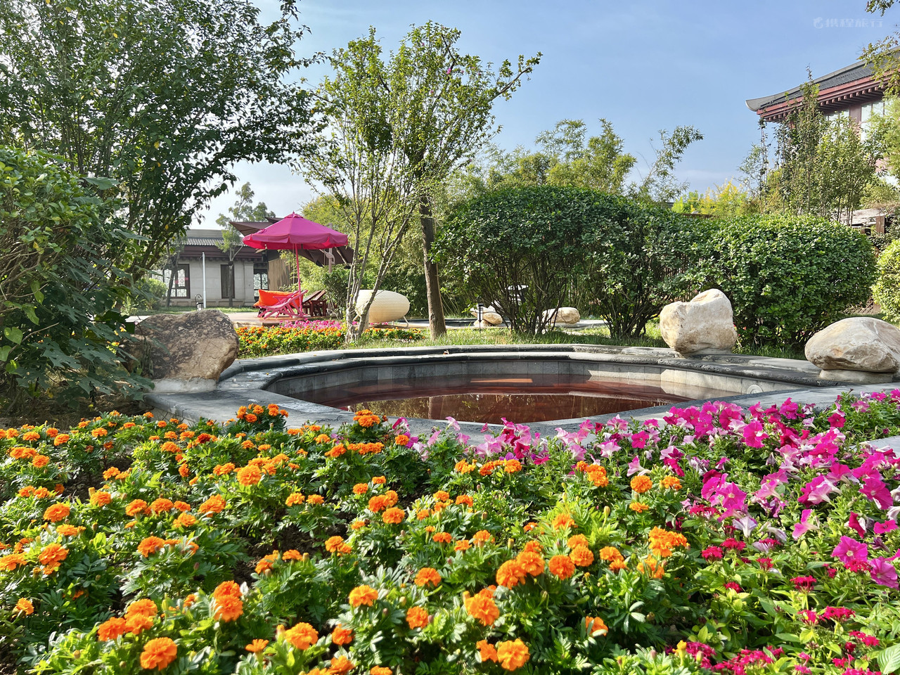

YUANWANG
INTERNATIONAL
HOME
PRODUCTS
ENGINEERING
AFTER-SALES
CONTACT
EN
中文
PROJECT ARCHIVE · 18 SOURCE FOLDERS
01 / SOURCE ARCHIVE INDEX

01 /

02 /

03 /
04 /
05 /
06 /
07 /
08 /
09 /
10 /
11 /
12 /
13 /
14 /
15 /
16 /
17 /
18 /
02 / COMPANY-REPORTED EXPERIENCE